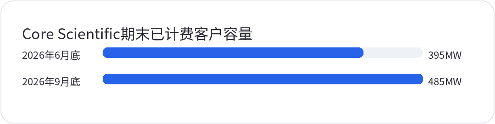

<div style="margin:0;padding:0;background:#f5f7fa;color:#2a2a34;font-size:16px;line-height:1.9;font-family:-apple-system,BlinkMacSystemFont,'SF Pro Text','PingFang SC','Hiragino Sans GB','Microsoft YaHei',Arial,sans-serif;font-variant-numeric:tabular-nums;font-feature-settings:'tnum' 1,'lnum' 1;text-align:left !important;text-align-last:left;letter-spacing:0;word-spacing:normal;white-space:normal;word-break:normal;box-sizing:border-box;"><div style="margin:0;background:#ffffff;padding:28px 22px 44px 22px;box-sizing:border-box;text-align:left !important;text-align-last:left;letter-spacing:0;word-spacing:normal;white-space:normal;word-break:normal;"><p style="display:block;width:100%;margin:0 0 12px 0;padding:0;color:#2763e9;font-size:10px;line-height:1.6;font-weight:650;letter-spacing:0.12em;text-align:center !important;text-align-last:center;word-spacing:normal;white-space:normal;word-break:normal;box-sizing:border-box;">美股 · 期权 · 资讯 · 观点</p><div style="margin:0 0 30px 0;padding:0;text-align:center !important;text-align-last:center;word-spacing:normal;white-space:normal;word-break:normal;box-sizing:border-box;"></div><div style="margin:0 0 0 0;padding:28px 0 0 0;text-align:left !important;text-align-last:left;letter-spacing:0;word-spacing:normal;white-space:normal;word-break:normal;box-sizing:border-box;"><div style="margin:0 0 12px 0;padding:0;text-align:left !important;line-height:1.2;border:0;display:flex;align-items:center;gap:10px;text-align-last:left;letter-spacing:0;word-spacing:normal;white-space:normal;word-break:normal;box-sizing:border-box;"><span style="display:inline-block;flex:0 0 auto;vertical-align:middle;color:#2763e9;font-size:12px;font-weight:850;letter-spacing:0.12em;line-height:1.2;text-transform:uppercase;border:0;box-sizing:border-box;">0 · FOCUS</span><span style="display:block;flex:1 1 auto;min-width:36px;vertical-align:middle;height:1px;margin:0 0 2px 0;background:#2763e9;line-height:1px;font-size:0;border:0;box-sizing:border-box;"></span></div><p style="margin:0 0 16px 0;padding:0;color:#2a2a34;font-size:22px;line-height:1.45;font-weight:850;text-align:left !important;letter-spacing:0;text-align-last:left;word-spacing:normal;white-space:normal;word-break:normal;box-sizing:border-box;">每秒7美分的报价，要怎样变成省下的钱</p><p style="margin:0 0 16px 0;padding:0;color:#454550;font-size:16px;line-height:1.9;font-weight:400;text-align:left !important;letter-spacing:0;word-spacing:normal;white-space:normal;word-break:normal;text-align-last:left;box-sizing:border-box;">11月5日，Google在官方开发者博客与Cloud公告中宣布Gemini Omni 1.2 Flash正式可用，经Gemini API与Google Cloud提供。普通生成和编辑的单次上限从10秒延长至15秒，720p含同步声音输出的公告约价降至每秒0.07美元，较前代约低30%。The Decoder同日核对了价格和时长条款。这次更新改变了可购买服务的范围，尚未证明企业完成一条合格短片的总成本下降30%；质量验收、重做和后期处理仍会影响最终账单。报价属于服务对外收费，并未披露厂商实际推理成本。</p><p style="margin:0 0 16px 0;padding:0;color:#454550;font-size:16px;line-height:1.9;font-weight:400;text-align:left !important;letter-spacing:0;word-spacing:normal;white-space:normal;word-break:normal;text-align-last:left;box-sizing:border-box;">把公告约价换回token计费，账目会更清楚。两代720p含声音输出均按每秒5792个token换算，每百万输出token分别收费17.50和12美元。因此，旧版10秒输出约1.0136美元，新版相同时长约0.69504美元；新版15秒约1.04256美元。这些是按标准价表计算的输出费，输入、文字输出、升分辨率及后期费用另算，同步声音则已含在这套输出口径内。拿旧版10秒与新版15秒比较，不能推导产品涨价；讨论降价时必须固定时长和分辨率，每次重做还会累积同类费用。</p><p style="margin:0 0 16px 0;padding:0;color:#454550;font-size:16px;line-height:1.9;font-weight:400;text-align:left !important;letter-spacing:0;word-spacing:normal;white-space:normal;word-break:normal;text-align-last:left;box-sizing:border-box;">采购方还要核对，同等质量下究竟需要生成多少次。若只计算这项输出费，累计生成用量比旧版增加约46%，就会抵消12美元相对17.50美元报价带来的节省。46%是定价推算的临界条件，并非实测返工率，也没有包含人工成本。镜头衔接、品牌元素、人物一致性若需要反复修订，就会改变这个结果。模型厂商降低调用价后，平台是否传递优惠、客户最终是否少付钱，取决于订阅合同、计费方式和验收标准，不能直接把API降幅记成利润增幅。</p><p style="margin:0 0 16px 0;padding:0;color:#454550;font-size:16px;line-height:1.9;font-weight:400;text-align:left !important;letter-spacing:0;word-spacing:normal;white-space:normal;word-break:normal;text-align-last:left;box-sizing:border-box;">云服务过去的降价过程，也能帮助理解这笔费用。2014年3月26日，AWS宣布第42轮降价，涉及计算、存储和数据库服务；客户依旧需要配置资源、管理数据和运行软件。可比的是基础资源单价下降后，业务总费用仍由使用量与运营方式共同决定。今天的生成任务又多了一层质量不确定性，同样的请求不保证每次都得到能用的结果。较低的推理报价能扩大试用空间，但不能据此认定人审和制作环节已经被等比例替代，更不能反推Google自己的算力成本或毛利改善。</p><p style="margin:0 0 16px 0;padding:0;color:#454550;font-size:16px;line-height:1.9;font-weight:400;text-align:left !important;letter-spacing:0;word-spacing:normal;white-space:normal;word-break:normal;text-align-last:left;box-sizing:border-box;">未来2至3个季度，判断降价有没有转成业务价值，应固定成片长度、分辨率和质量门槛，记录累计生成秒数、一次验收通过情况以及人工修改时长。普通生成与编辑可到15秒，不代表首尾帧插值和单次延长也突破原有3至10秒范围；音频参考仍有白名单条件，不能与已包含的同步声音输出混为一谈。在这些条件可比、每条合格成片的完整费用下降时，扩大使用才有依据。若调用量增长而验收费用没有改善，便不能把增长解读为生产率提升。</p></div><div style="margin:30px 0 0 0;padding:28px 0 0 0;text-align:left !important;text-align-last:left;letter-spacing:0;word-spacing:normal;white-space:normal;word-break:normal;box-sizing:border-box;"><div style="margin:0 0 12px 0;padding:0;text-align:left !important;line-height:1.2;border:0;display:flex;align-items:center;gap:10px;text-align-last:left;letter-spacing:0;word-spacing:normal;white-space:normal;word-break:normal;box-sizing:border-box;"><span style="display:inline-block;flex:0 0 auto;vertical-align:middle;color:#2763e9;font-size:12px;font-weight:850;letter-spacing:0.12em;line-height:1.2;text-transform:uppercase;border:0;box-sizing:border-box;">1 · LIQUIDITY</span><span style="display:block;flex:1 1 auto;min-width:36px;vertical-align:middle;height:1px;margin:0 0 2px 0;background:#2763e9;line-height:1px;font-size:0;border:0;box-sizing:border-box;"></span></div><p style="margin:0 0 16px 0;padding:0;color:#2a2a34;font-size:22px;line-height:1.45;font-weight:850;text-align:left !important;letter-spacing:0;text-align-last:left;word-spacing:normal;white-space:normal;word-break:normal;box-sizing:border-box;">机房开始计费，建设资金却还得继续投入</p><p style="margin:0 0 16px 0;padding:0;color:#454550;font-size:16px;line-height:1.9;font-weight:400;text-align:left !important;letter-spacing:0;word-spacing:normal;white-space:normal;word-break:normal;text-align-last:left;box-sizing:border-box;">11月5日，Core Scientific在第三季度财报与10-Q中披露，截至9月30日，已开始服务并计费的客户容量达到485MW，6月底为395MW，同口径增加90MW。第三季度托管收入约2.154亿美元，环比增长约58%。公司已租给CoreWeave的590MW中，还有105MW处于建设或调试阶段。Yahoo Finance与Benzinga也报道了计费容量和收入进展。这些是季度末业务状态，不能写成11月5日当天新建485MW，更不能把590MW全部当作已交付算力。已计费表示服务已经启动，尚不能说明设备利用率，也不等于同日收到全部租金。</p><p style="margin:4px 0 6px 0;padding:0;text-align:center !important;text-align-last:center;word-spacing:normal;white-space:normal;word-break:normal;box-sizing:border-box;"></p><p style="margin:0 0 16px 0;padding:0;color:#9a9aa8;font-size:12px;line-height:1.6;text-align:center !important;text-align-last:center;word-spacing:normal;white-space:normal;word-break:normal;box-sizing:border-box;">公司披露的同口径期末已开始服务并计费的客户容量，不代表GPU利用率、模型吞吐或全部签约容量。两期相差90MW，不能与当季总资本支出相除推算新增容量造价。</p><p style="margin:0 0 16px 0;padding:0;color:#454550;font-size:16px;line-height:1.9;font-weight:400;text-align:left !important;letter-spacing:0;word-spacing:normal;white-space:normal;word-break:normal;text-align-last:left;box-sizing:border-box;">建设支出和服务回款，需要分开核对。第三季度公司披露资本支出约9.85亿美元，范围包含固定资产、土地和开发权，覆盖不同阶段的投入；它不能除以新增90MW，得出单兆瓦造价。再看前三季度现金流，公司经营净流入约2.96亿美元，购买固定资产现金支出约14.95亿美元，后者尚不包含另列的资产收购支出。经营流入还包含出售自挖数字资产的所得，不能全部当作AI托管租金。季度资本支出和累计现金流的定义、期间不同，也不能拿来随意相减。</p><p style="margin:0 0 16px 0;padding:0;color:#454550;font-size:16px;line-height:1.9;font-weight:400;text-align:left !important;letter-spacing:0;word-spacing:normal;white-space:normal;word-break:normal;text-align-last:left;box-sizing:border-box;">计费容量增加，证明交付正在推进；现金何时收回，仍受合同安排影响。10-Q说明，客户电费按无加价方式转付，收入与托管成本按总额记录，因此托管收入上涨并不等于同幅度的高毛利租金增长。前三季度公司融资净流入约32亿美元，也表明经营和建设账目之外仍有大量外部资金流动。机房公司要先安排供电、改造与交付，客户另行承担芯片和模型运行支出。没有统一电价、冷却效率和客户负载数据，就不能从485MW直接算出每百万token的完整成本。</p><p style="margin:0 0 16px 0;padding:0;color:#454550;font-size:16px;line-height:1.9;font-weight:400;text-align:left !important;letter-spacing:0;word-spacing:normal;white-space:normal;word-break:normal;text-align-last:left;box-sizing:border-box;">历史对照可以帮助理解这段时间差，却不能代替需求判断。美联储2001年的资本投资演讲及里士满联储2003年的电信研究，都讨论过长途光纤扩张与末端接入、需求预测之间的错配。设施最终有用途，不保证最初投入者及时赚回资本；局部供给过多，也可能与另一段交付不足同时存在。Core Scientific已经披露实际计费容量，并有租赁合同，这与闲置光纤的需求证据不同。类比有用之处在建设和回款的先后关系，不能拿它直接预言AI需求崩塌。</p><p style="margin:0 0 16px 0;padding:0;color:#454550;font-size:16px;line-height:1.9;font-weight:400;text-align:left !important;letter-spacing:0;word-spacing:normal;white-space:normal;word-break:normal;text-align-last:left;box-sizing:border-box;">跟踪<strong style="color:#2a2a34;font-weight:700;box-sizing:border-box;">CORZ</strong>时，应核对已签容量转入计费的速度，以及租赁回款能否逐步覆盖建设需要。到2027年二、三季度，若剩余105MW按项目进度转入计费，经常性回款增加，后续扩张对新增融资的依赖下降，就支持交付改善。若合同继续增长，计费却停滞，建设支出和债务负担仍扩张，就需要下调近期兑现预期。这里并未要求公司立刻停止建设。核对订单、服务启动、收入与现金时，需要逐项确认进度；每一步改善的含义不同，不能提前合并成一项盈利承诺。</p></div><div style="margin:30px 0 0 0;padding:28px 0 0 0;text-align:left !important;text-align-last:left;letter-spacing:0;word-spacing:normal;white-space:normal;word-break:normal;box-sizing:border-box;"><div style="margin:0 0 12px 0;padding:0;text-align:left !important;line-height:1.2;border:0;display:flex;align-items:center;gap:10px;text-align-last:left;letter-spacing:0;word-spacing:normal;white-space:normal;word-break:normal;box-sizing:border-box;"><span style="display:inline-block;flex:0 0 auto;vertical-align:middle;color:#2763e9;font-size:12px;font-weight:850;letter-spacing:0.12em;line-height:1.2;text-transform:uppercase;border:0;box-sizing:border-box;">2 · FOCUS</span><span style="display:block;flex:1 1 auto;min-width:36px;vertical-align:middle;height:1px;margin:0 0 2px 0;background:#2763e9;line-height:1px;font-size:0;border:0;box-sizing:border-box;"></span></div><p style="margin:0 0 16px 0;padding:0;color:#2a2a34;font-size:22px;line-height:1.45;font-weight:850;text-align:left !important;letter-spacing:0;text-align-last:left;word-spacing:normal;white-space:normal;word-break:normal;box-sizing:border-box;">评审意见处理过，离真正修好还有多远</p><p style="margin:0 0 16px 0;padding:0;color:#454550;font-size:16px;line-height:1.9;font-weight:400;text-align:left !important;letter-spacing:0;word-spacing:normal;white-space:normal;word-break:normal;text-align-last:left;box-sizing:border-box;">11月5日，GitHub在官方更新中为Copilot使用指标API增加代码评审细项及处理率，组织和企业可以按仓库、按日查看评审评论的处理情况。新增指标会把直接采用建议、手动改码、让Copilot修改等动作计入处理，也允许回复以后在另一条PR中修复。PR是一次提交给团队审阅和合并的代码改动，处理意见并不保证补丁已经上线。BuildApps等出版方核对了这项更新，但没有给出独立测得的修复效率或成本下降数字。</p><p style="margin:0 0 16px 0;padding:0;color:#454550;font-size:16px;line-height:1.9;font-weight:400;text-align:left !important;letter-spacing:0;word-spacing:normal;white-space:normal;word-break:normal;text-align-last:left;box-sizing:border-box;">处理率的分母也有时间和样本边界。官方说明，评论要等所在PR合并时才评估；尚未合并的困难改动不会同时进入当天分母。机器人账号（bot）发起的PR通常不参与评论评估，另一项“首次Copilot评审后没有人工要求修改的已合并PR”计数却仍包含bot。把这两类数字相除，无法得到人类被替代的比例。采购和工程负责人至少应按相同仓库、改动风险及合并时间比较，不能因为一天的处理率上升，就认定模型更准确或团队少做了同样多的工作。</p><p style="margin:0 0 16px 0;padding:0;color:#454550;font-size:16px;line-height:1.9;font-weight:400;text-align:left !important;letter-spacing:0;word-spacing:normal;white-space:normal;word-break:normal;text-align-last:left;box-sizing:border-box;">要核算评审成本，还得把这些动作与实际投入关联起来。模型调用和工具额度之外，人还要读意见、判断误报、修改代码、回归测试，并承担上线后的回滚与修复工作。本次发布没有披露这些工时，也没有给出每条验收改动的实际总费用。该API中的用户期内AI额度消耗字段，没有按评审功能单独拆分，不能全部分摊给代码评审。平台提供活动记录，团队负责确认业务结果，两者的激励并不完全一致；若采购只奖励处理率，回复“以后修”也可能让报表变好，却不缩短真正的修复周期。</p><p style="margin:0 0 16px 0;padding:0;color:#454550;font-size:16px;line-height:1.9;font-weight:400;text-align:left !important;letter-spacing:0;word-spacing:normal;white-space:normal;word-break:normal;text-align-last:left;box-sizing:border-box;">这类问题在生成式AI之前就存在。Google于2018年发表的静态分析工具论文，复盘了2009年一次FindBugs工程实践，当时人工审阅3954条告警，其中640条实际修复，约占已审阅样本16%。这是有特定流程和任务背景的历史记录，不能套成今天Copilot的修复率。它说明发现、登记、采取行动和完成修复早已是不同状态。把工具接入日常代码评审有助于意见被看到，开发者是否信任告警、修复是否值得投入，以及结果如何验收，仍会决定工具的实际价值。</p><p style="margin:0 0 16px 0;padding:0;color:#454550;font-size:16px;line-height:1.9;font-weight:400;text-align:left !important;letter-spacing:0;word-spacing:normal;white-space:normal;word-break:normal;text-align-last:left;box-sizing:border-box;">未来2至3个季度，更有用的检验是追踪同一类改动，看看人工审阅分钟数、从合并到部署的时间，以及上线回滚和紧急修复是否一起改善。若处理率上升，同时验收工时下降、交付更快且故障没有增加，就有依据提高自动评审预算。若变化主要来自更多延期回复，或复杂PR留在分母之外，报表改善就不能支持扩大采购。这些指标提供了检验条件，尚不能凭新字段算出已经节省多少工程师、减少多少缺陷；没有人要求修改，也不能写成没有人审核。</p></div><div style="margin:30px 0 0 0;padding:28px 0 0 0;text-align:left !important;text-align-last:left;letter-spacing:0;word-spacing:normal;white-space:normal;word-break:normal;box-sizing:border-box;"><div style="margin:0 0 12px 0;padding:0;text-align:left !important;line-height:1.2;border:0;display:flex;align-items:center;gap:10px;text-align-last:left;letter-spacing:0;word-spacing:normal;white-space:normal;word-break:normal;box-sizing:border-box;"><span style="display:inline-block;flex:0 0 auto;vertical-align:middle;color:#2763e9;font-size:12px;font-weight:850;letter-spacing:0.12em;line-height:1.2;text-transform:uppercase;border:0;box-sizing:border-box;">3 · FOCUS</span><span style="display:block;flex:1 1 auto;min-width:36px;vertical-align:middle;height:1px;margin:0 0 2px 0;background:#2763e9;line-height:1px;font-size:0;border:0;box-sizing:border-box;"></span></div><p style="margin:0 0 16px 0;padding:0;color:#2a2a34;font-size:22px;line-height:1.45;font-weight:850;text-align:left !important;letter-spacing:0;text-align-last:left;word-spacing:normal;white-space:normal;word-break:normal;box-sizing:border-box;">接下来2至3个季度，要把节省落到验收结果上</p><p style="margin:0 0 16px 0;padding:0;color:#454550;font-size:16px;line-height:1.9;font-weight:400;text-align:left !important;letter-spacing:0;word-spacing:normal;white-space:normal;word-break:normal;text-align-last:left;box-sizing:border-box;">从Google的输出报价，到Core Scientific的计费容量，再到GitHub的评审处理率，三个更新分别补充了成本和交付中的一段记录。企业会越来越需要说明，投入的资源最终换来了多少验收通过的结果。价格表回答调用如何收费，机房计费说明服务到了什么阶段，处理率记录开发者采取了什么动作。三者都不能单独替代客户的完整业务账目。把这些边界分清，才能识别技术进展带来的收益，而不必否定已发生的降价和交付。</p><p style="margin:0 0 16px 0;padding:0;color:#454550;font-size:16px;line-height:1.9;font-weight:400;text-align:left !important;letter-spacing:0;word-spacing:normal;white-space:normal;word-break:normal;text-align-last:left;box-sizing:border-box;">模型端的价格竞争，会推动采购方把比较重点从单次报价移到合格产出的总费用。观察窗口到2027年二、三季度，重点看相同质量任务下的累计生成用量、人审时长和验收费用。若新工具在这些指标上持续改善，较低API报价就有机会变成更广的使用和续约；若低价被更多重做、平台收费或人工工作抵消，单价下降仍是事实，但企业扩大预算的理由会减弱。这里不预设所有业务都适合生成，也不把生成量增加当作付费意愿增强的证明。</p><p style="margin:0 0 16px 0;padding:0;color:#454550;font-size:16px;line-height:1.9;font-weight:400;text-align:left !important;letter-spacing:0;word-spacing:normal;white-space:normal;word-break:normal;text-align-last:left;box-sizing:border-box;">扩张速度还会受到资金和工程验收能力的约束。机房合同要走到可计费服务，软件建议要走到部署完成的改动，两个环节都需要有人承担前置投入和失败成本。若实际计费和经常性收款追上建设，或自动评审在不增加事故的同时减少人审时间，就说明这些约束在缓解。若签约、生成和处理计数不断上升，回款与交付却没有跟上，就应缩小对近期盈利改善的推断。这种情况不足以否定技术价值，但当前证据仍停留在较早的业务阶段。</p><p style="margin:0 0 16px 0;padding:0;color:#454550;font-size:16px;line-height:1.9;font-weight:400;text-align:left !important;letter-spacing:0;word-spacing:normal;white-space:normal;word-break:normal;text-align-last:left;box-sizing:border-box;">比较这些变化，要先统一统计口径。Google新旧模型应固定输出规格，机房比较应固定计费口径和现金流期间，代码评审应固定仓库、风险和入样时点。没有公开资料的电价、折旧年限、单机柜造价和人工时薪，都不能随手填一个行业数字，拼成看似精密的回本模型。多列几项费用也不等于更完整，客户报销、预付建设款与资产收购若重复计算，同样会扭曲结果。缺少明细时，保留未决项比给出虚假的单位利润更有助于决策。</p><p style="margin:0 0 16px 0;padding:0;color:#454550;font-size:16px;line-height:1.9;font-weight:400;text-align:left !important;letter-spacing:0;word-spacing:normal;white-space:normal;word-break:normal;text-align-last:left;box-sizing:border-box;">技术采购方下一步需要补充验收和使用记录，投资者则要核对交付、现金和持续收费能力之间的关系。两类人关注的终点不同，都需要知道节省留在了谁的账上。供应商降价后客户少付钱、平台保留一部分价差、团队把省下的额度用于更多生成，这几种情况都有可能发生。只有把报价、实际用量与最终结果放在同一时间范围内核对，才能判断哪种变化在创造可持续的收益，而不是仅仅让活动数字变得更大。</p></div><div style="margin:34px 0 0 0;padding:0;border:1px solid #e4e7ed;border-radius:24px;background:#fafbfc;text-align:center !important;box-sizing:border-box;overflow:hidden;text-align-last:center;word-spacing:normal;white-space:normal;word-break:normal;"><p style="margin:0;padding:18px 16px;color:#6a6a78;font-size:14px;line-height:1.8;text-align:center !important;background:#fafbfc;box-sizing:border-box;text-align-last:center;word-spacing:normal;white-space:normal;word-break:normal;">长按识别二维码关注公众号，持续获取每日美股资讯与观点。</p><p style="margin:0;text-align:center !important;background:#ffffff;box-sizing:border-box;text-align-last:center;word-spacing:normal;white-space:normal;word-break:normal;"></p></div><p style="margin:28px 0 0 0;padding:22px 0 0 0;color:#9a9aa8;font-size:12px;line-height:1.8;text-align:center !important;text-align-last:center;word-spacing:normal;white-space:normal;word-break:normal;box-sizing:border-box;">免责声明：本文仅为个人市场观察和交易复盘，不构成任何投资建议；市场有风险，交易需谨慎。点击阅读原文可跳转博客。</p></div></div>
